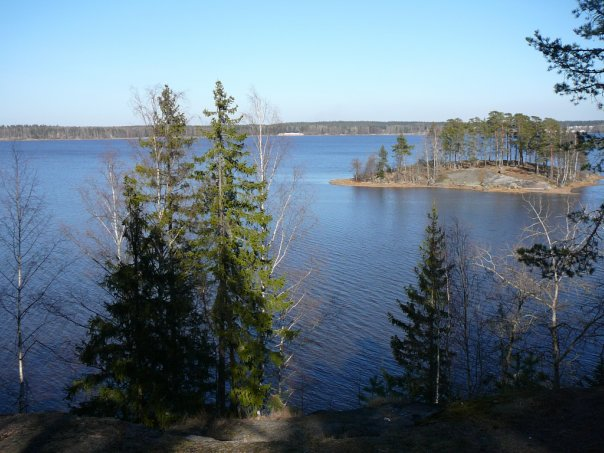

Официальный FAQ и Гайд

Куда Идём ?
Выборг. Примерно вот Сюда
Что обязательно надо взять с собой ?
Рюкзак
Сменную одежду
КЛМ – это Кружка, Ложка, Миска.
Что еще можно взять с собой ?
Спальный мешок или спальное одеяло
Туристический коврик. Он кладется на дно палатки для теплоизоляции и мягкости
Налобный фонарь
Средства личной гигиены (зубная щетка, паста, мыло, маленькое полотенце)
Что уже есть из общей экипировки ?
Палатки 2ух местные 2шт
Трос костровой
Пила карманная
Котёл 5л
Котёл 6л
Коврик туристский 6шт
Тент групповой 3х5 м
Что еще надо из общей экипировки ?
Палатка 2ух местная 1шт
Топорик
Средство для мытья посуды
Мыло
Зубная паста
Спички
Половник
Аптечка
Еда